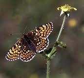
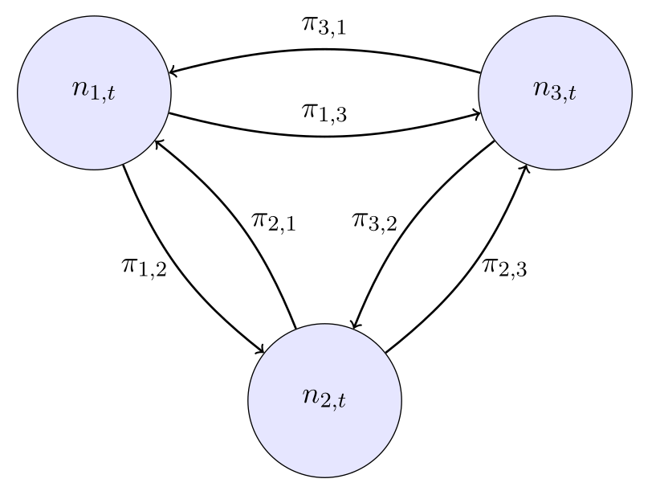
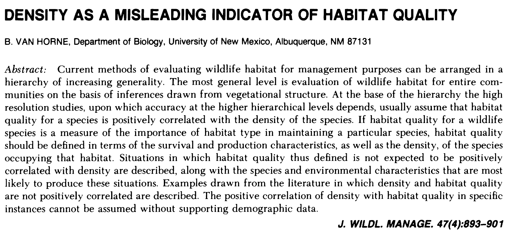
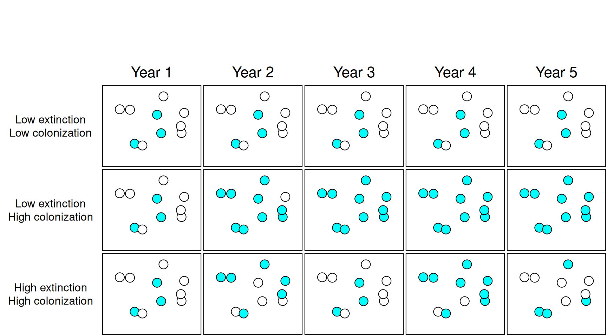
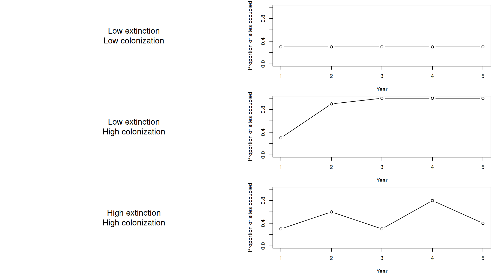
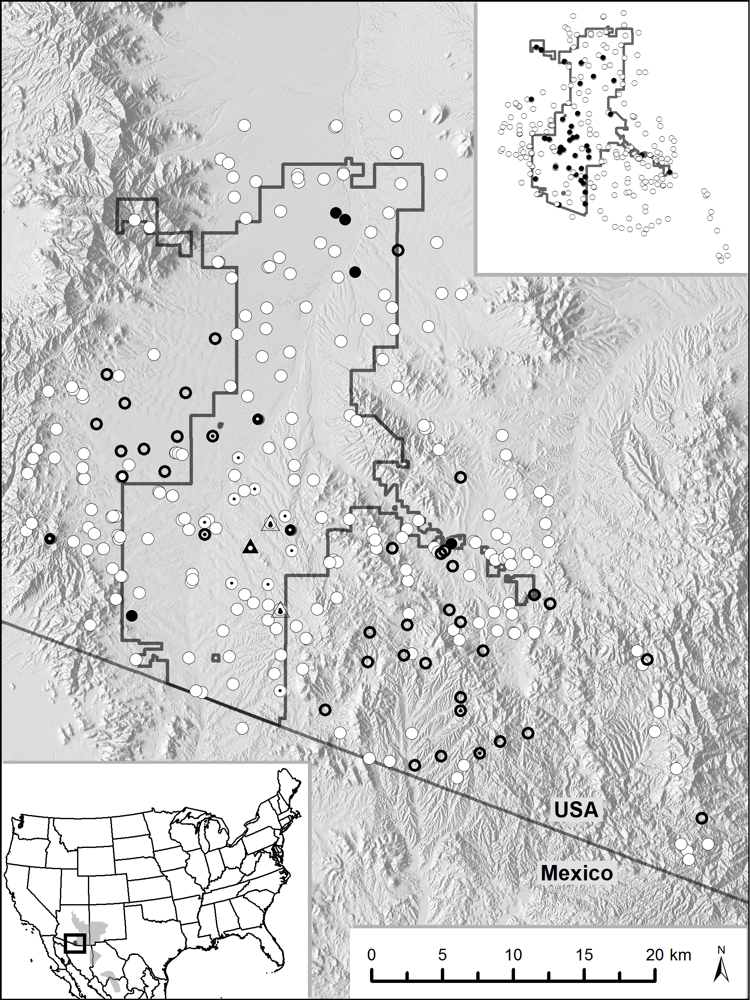
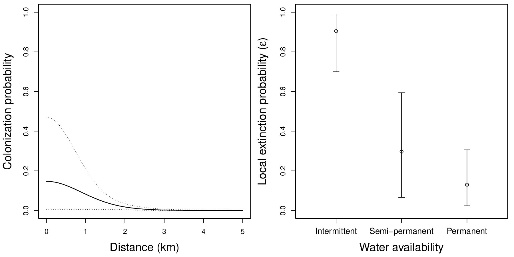
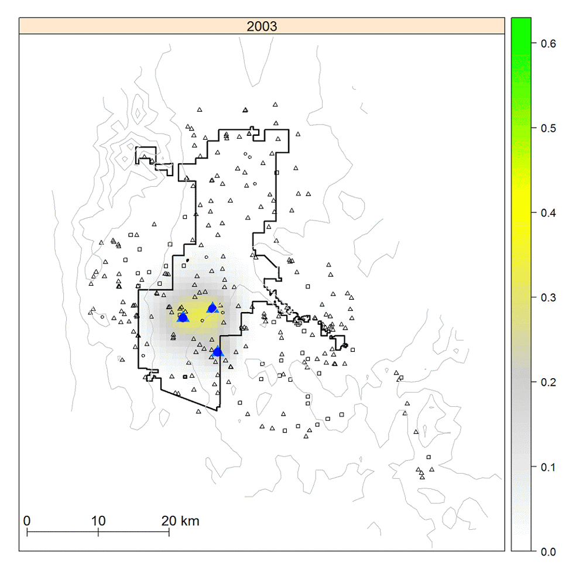
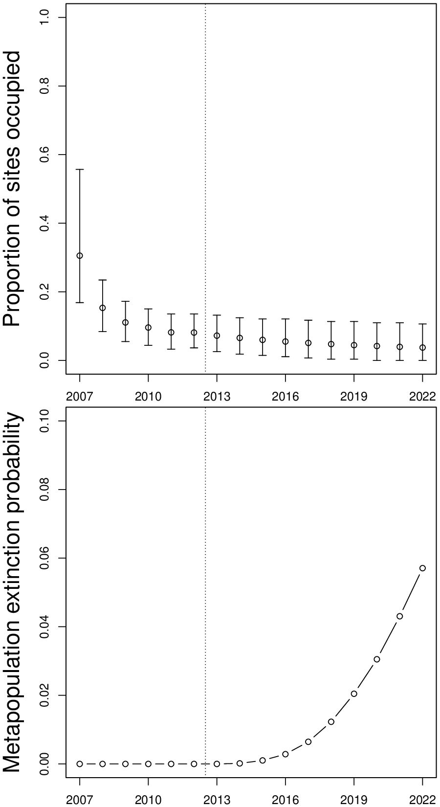

Metapopulation models

Applied Population Dynamics (WILD 5700/7700)
A metapopulation is a population of subpopulations linked by dispersal.
Properties
Richard Levins
First metapopulation models were parameterized in terms of the proportion of patches occupied.
Modern models are formulated in terms of patch-specific site occupancy or abundance.
A simple case with only three subpopulations
\[ N_t = n_{1,t} + n_{2,t} + n_{3,t} \]

The movement probabilities (\(\pi_{i,j}\)) indicate the proportion of individuals moving from patch \(i\) to patch \(j\).
Building the metapopulation model for the first subpopulation.
\[ n_{1,t+1} = n_{1,t}\lambda_1 \phantom{\color{blue}{(1 - \pi_{1,2} - \pi_{1,3})} + {\color{red}{n_{2,t}\lambda_2 (\pi_{2,1}) + n_{3,t}\lambda_3 (\pi_{3,1})}}} \]
\[ n_{1,t+1} = n_{1,t}\lambda_1 \color{blue}{(1 - \pi_{1,2} - \pi_{1,3})} \phantom{+ {\color{red}{n_{2,t}\lambda_2 (\pi_{2,1}) + n_{3,t}\lambda_3 (\pi_{3,1})}}} \]
\[ n_{1,t+1} = n_{1,t}\lambda_1 \color{blue}{(1 - \pi_{1,2} - \pi_{1,3})} + {\color{red}{n_{2,t}\lambda_2 (\pi_{2,1}) + n_{3,t}\lambda_3 (\pi_{3,1})}} \]
Three components:
Movement probabilities (\(\pi_{i,j}\)) can be influenced by many factors:
Source
A patch with \(\lambda>1\) in the absence of immigration. Sources tend to be net exporters of individuals.
Sink
A patch with \(\lambda<1\) in the absence of immigration. Sinks would go extinct in the absence of immigration.
Ecological trap
A sink that animals incorrectly perceive as a high quality source.
Can we identify sources, sinks, and traps by estimating patch-specific density (at one point in time)?

Assignment: Read this paper and be prepared to discuss it.
Emphasis on stochastic patch-level dynamics
Occurrence (\(O_{i,t}\)): Indicates if patch \(i\) occupied at time \(t\)
Occurrence probability (psi=\(\psi_{i,t}\)): Probability that site \(i\) is occupied at time \(t\)
Colonization probability (gamma=\(\gamma\)): Probability that an unoccupied patch at time \(t\) becomes occupied at time \(t+1\).
Local extinction probability (epsilon=\(\varepsilon\)): Probability that an occupied patch at time \(t\) becomes unoccupied at time \(t+1\).
Metapopulation extinction risk: Probability that all subpopulation will go extinct.


\[ \psi_{i,t+1} = O_{i,t}(1-\varepsilon) + (1-O_{i,t})\gamma \\ O_{i,t+1} \sim \mbox{Bernoulli}(\psi_{i,t+1}) \]
All else equal…




Metapopulation models are widely used to describe the dynamics of fragmented populations.
Model can be formulated in terms of patch-level abundance or occupancy.
Modern models are stochastic and spatially explicit.